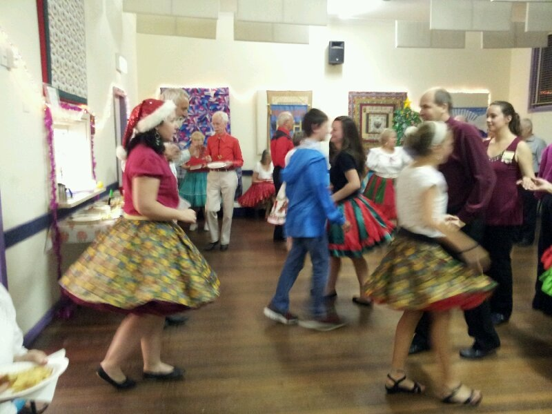

Square Dancing
Square dancing is a fast-paced, lively type of folk dance. Square dancing is a fun form of dance involving social interaction between several dancers.
Square dancing is characterized by four couples, or eight dancers. The four couples are arranged in the shape of a square, with each couple forming one of the sides of the square. Two of the couples are referred to as the "head couples," with the other two the "side couples." Each dance  is started and finished in the original square formation. During a square dance, a "square dance caller" uses a microphone to guide the dancers through a sequence of steps in time to the music. The caller calls out various moves, steps, spins, turns, and partner changes.
Square dancing originated from dances of the 17th century, mainly the quadrille and the Morris dance. Popular in England, France and Europe, square dancing also has roots in the United States. The square dance has been designated as the official dance of 19 states in the US.
The term "square dance" is usually associated with lively callers. A caller must create logical dance sequences, or calls, that match the expectations and abilities of the dancers. A "Square Dancing Logocall" is the name of a specific dance movement. Square dance calls usually consist of between 4 and 32 counts, or steps. Call sequences may be long or quite short.
Modern square dance music includes various types of music, including pop, country, rock and Broadway musicals. The music is usually faster and often recorded.